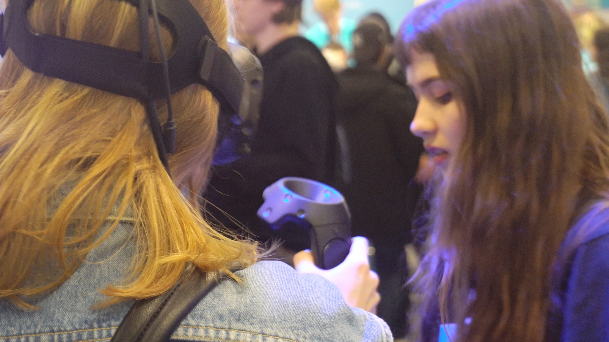
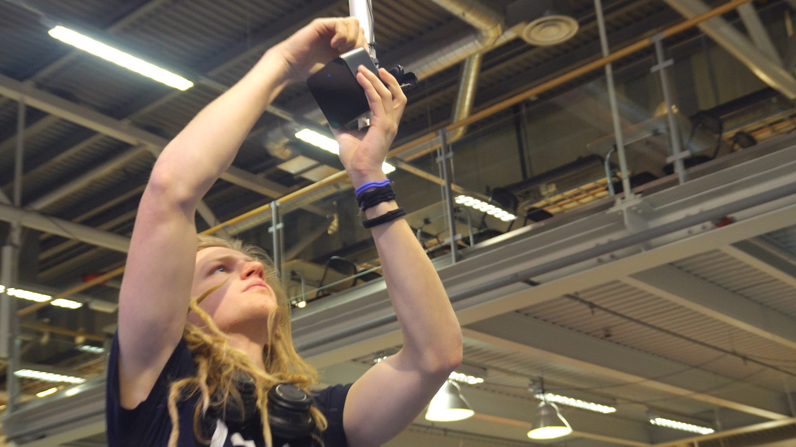

Vad ger den mest verklighetstrogna upplevelsen i VR? Omslutenhet genom ljud eller interaktivitet genom handkontroller?
Mitt gymnasiearbete i trean på NTI-gymnasiet ville jag skulle handla om VR, en inspirerande teknik som just har blivit så tillgänglig att jag som nytänkande teknikintresserad ungdom kan sträcka mig fram och förverkliga mina idér.
Alltså behövde vi bara en frågeställning: Jag och min kamrat Fabian Olsson som jag utförde projektet tillsammans med bestämde att vi skulle skapa en generisk miljö som vi senare skulle kunna låta våra testpersoner röra sig runt i. Vi skulle låta varje person testa att interagera med miljön under en given tid genom att gå runt och plocka upp saker, trycka på knappar med mera. Därefter tog vi ifrån testpersonerna kontrollerna och lät de istället lyssna på miljön genom ett par hörlurar.

Miljön vi valde att designa var en bensinmack från 60-talet. Vi ville skapa en miljö där ett sinne inte vägde mer än något annat, hade vi exempelvis skapat ett pingisbord hade kanske ljudet vägt mindre än interaktiviteten på samma sätt som att det hade varit dumt att designa en teater för att testa interaktivitet.
Vi gjorde en tidsplan väl medvetna om att vår största utmaning skulle vara att konstruera övertygande 3D-modeller som verkligen bidrog till verklighetskänslan. Vi insåg snabbt att det gick att göra relativt enkla modeller om man bara texturerar dem snyggt, vi började grotta ner oss djupt i normal, specular och detail maps och såg med glädje hur ljuset reflekterades precis som vi ville ha det. Puts, trä och rostiga plåtytor växte fram och från kritiken vi fick verkade det som att vi lyckades med våra ambitioner om fotorealism, i alla fall på en godtycklig gymnasienivå.

Plötsligt gick hela tidsplanen i stöpet! Gymnasiemässan skulle hållas om bara någon månad och en lärare som kände till vårt projekt frågade oss om det fanns någon möjlighet att "macken" skulle kunna vara klar tills dess. Detta skulle innebära en månads kortare arbetstid, en ungefärlig halvering av arbetstiden. Smickrade sa vi självklart ja till erbjudandet om att stå synliga på mässan under fyra dagar i rad från morgon till kväll med vårt VR-projekt.
Mässan blev fantastisk och jag träffade många underbara människor som alla var upphetsade över att få testa min egen virtuella verklighet. Ett hundratal människor testade projektet och många minnesvärda händelser inträffade. Det var något väldigt speciellt när en 5-åring helt glömde bort pappa för en stund och bara förlorade sig i världen jag skapat.
Så tack NTI-gymnasiet för vår fördärvade tidsplan och tack för den fantastiska möjligheten, och speciellt stora tack till Lena, Micke och Martin som ledsagade mig genom denna utvecklingsprocess.